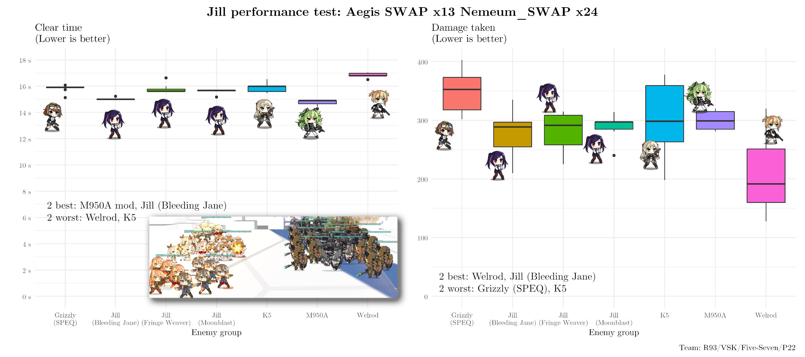
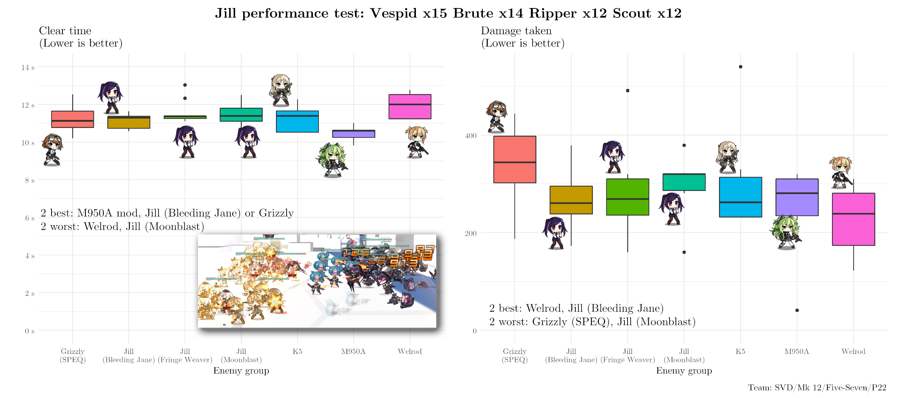
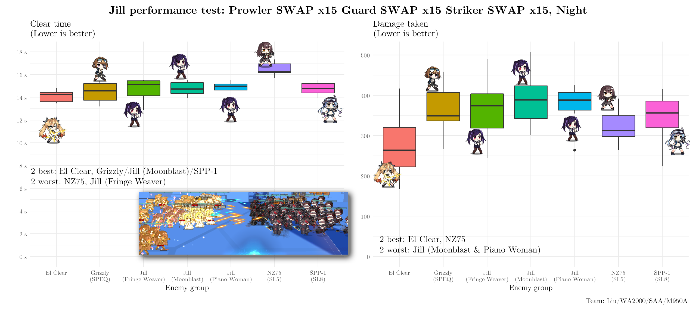

Introduction#
Jill is often maligned for her "9 second ICD," and is said to be a poor choice for regular teams. However, evidence never seems to accompany these claims. Let's run a few tests and see how she actually compares to other typical pos 4/5 HGs, against reasonably generic enemies.
ARSMGs are not included here as HGs aren't amazing options for them anyways.
Testing#

The accuracy tiles on Jill/K5/M950A help VSK a bit, but otherwise aren't a factor against these 0-EVA SF. Note that Calico's mod skill allows for faster engagement when not kiting, which gives her a bit of an edge for clear time.

These are looking a little too consistent. Let's switch to night battles to add more acc RNG, and go a little lighter on CDR tiles.

K5 is not worth considering when using General Liu, and some other adjustments to the HG lineup have been made for variety.
Conclusion#
Fervor is widely preferred over Damage II. UMP45 is not the definitive ARSMG maintank. Many fights don't end in 6 seconds. Or 7. Or 8. Jill's ICD doesn't look to be anywhere near as big a problem as people say it is. If you're willing to put a bit more thought than usual into your teams, she'll do fine.
Does this mean she'll see widespread usage in ranking echelons? Probably not - at least going by future ranking usage statistics (which have their own sets of issues), and as her performance isn't exceptional compared to other HGs. Those types of teams are always built to extremely specific purposes anyways. But, outside of such specific usecases, there's nothing terribly wrong with using Jill. Her tiles are quite good, and her skill activates in a relatively reasonable timeframe - especially with RF CDR tiles in play.
See also: my more general Jill analysis/comments.
Minor Notes#
- Important: damage taken stats are very volatile. Some callouts of the two worst/best there are extremely close calls and not actually significantly different.
- These types of tests are a little more positive towards debuffers than they should be. Proper kiting will reduce the total number of attacks taken, making debuffs less impactful. There are also other types of mitigation you could use - Shield fairy, Taunt, Beach, and P22's shields to name a few.
- Kiting with Jill is a little awkward. This can be resolved immediately in 95% of cases by moving her to position 4 at the start.
- Clear and Calico gave solid results even in teams that would sometimes have a bit of ROF overcap. While nowhere near definitive, this would suggest rifles can value a consistently high firing speed more than a slight loss in "efficiency."